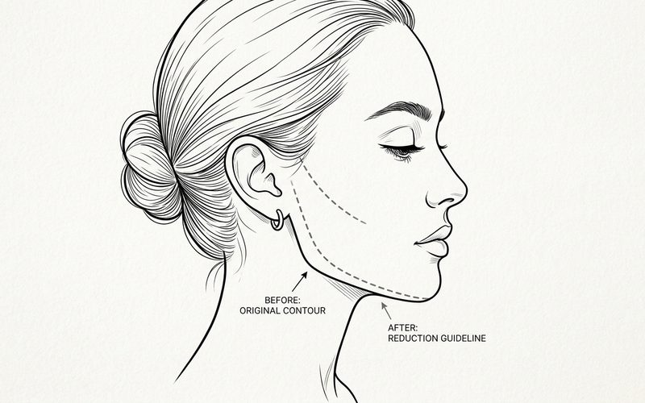
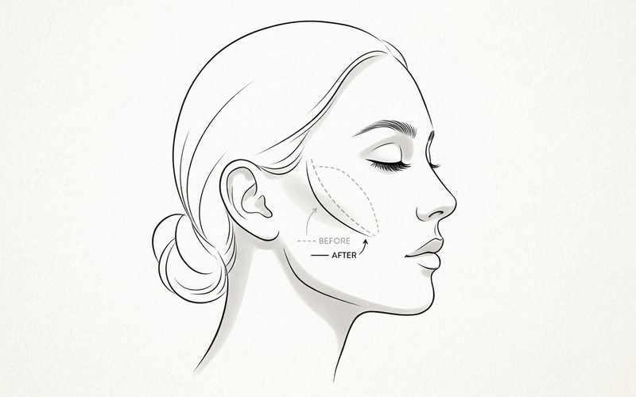

심부볼·관자 지방이식
관자부위에는 저작근이 넓게 펼쳐져 있기 때문에 그냥 지방이식을 하시는 것이 가장 좋습니다. 지방이식 결과도 좋고, 근육 내에만 이식을 하게 되면 생착률도 다른 부위에 비해서 매우 높습니다.
— 「관자 보형물 제거 - 관자 지방이식이 좋습니다. (feat. 퀵광대축소술)」 중에서 →심부볼·관자 지방이식 케이스 4개 보기 →퀵광대(15분 광대축소술)는 어떻게 수술하나요?
<로코코 15분 광대축소술>은 옆광대만(퀵광대) 축소하는 수술이며, <로코코 변형15분 광대축소술 + 로코코 미니리프팅>은 옆광대와 45도 광대를 같이 줄여주는 수술이랍니다.
김상호 원장 · 로코코성형외과

퀵광대 축소술 후 얼굴의 변화
케이스 보기 →이라고 생각하시면 되겠습니다.
— 「퀵광대 축소술에서 발생 가능한 부작용은?」 중에서 →— 「김상호 원장의 15분 광대축소술」 중에서 →15분 광대축소는 <옆광대> 에 특화된 수술이며, <45도 광대> 가 많이 나온 경우는 변형 15분 광대축소술로 45도쪽도 어느정도 안전하게 볼륨을 줄여줄 수 있답니다.
눈꼬리 아래쪽의 45도 광대는 남아있습니다. 이부위까지 줄이기 위해서는 퀵광대 방식의 변형 15분 광대축소술을 하셔야 한답니다.
— 김상호
— 「김상호 원장의 15분 광대축소술」 중에서 →하지만, 우리가 얼굴에서 <광대>라고 부르는 부위는 단순히 <광대뼈>만으로 만들어지는 구조물이 아니랍니다. 광대뼈+광대뼈를 덮고 있는 연부조직(살) + 광대주변의 구조물과의 관계 크게 보면 이 세가지 요인이 광대의 형태를 결정하게 되는데요, 광대주변의 중요 구조물로는 관자, 눈, 하관을 포함한 볼(심부볼)의 세가지가 있습니다.
이런 경우는 광대뼈 수술만으로는 좋은 결과를 만드는 데 한계가 있습니다. 반드시 하관에 볼룸을 더 채워서 광대부위를 감싸줘야 부드러운 얼굴을 만들 수 있답니다.
— 김상호
— 「김상호 원장의 15분 광대축소술」 중에서 →저는 전공의 시절부터 광대수술에 관심이 많았고, 부단한 노력 끝에 입안절개와 귀앞절개를 통한 광대축소로 시작하여, 내시경을 이용한 수술법을 거치며 조금씩 수술법을 발전시켜 지금의 15분 광대축소술 (퀵광대) 수술법을 직접 개발하게 되었습니다.
제가 처음 입안절개와 귀앞 절개를 통해 광대축소술을 할 때 1시간이 넘게 걸렸고, 처음 내시경 수술을 할 때도 1시간 넘는 수술시간이 필요했습니다. 이러한 긴 수술시간은 심한 붓기로 이어지고 고객의 사회복귀를 늦추는 결정적인 요인이 됩니다.
결국 수술시간은 한시간에서 15분으로 줄어들고, 절개 길이는 3cm에서 1.5cm까지 줄일 수 있었습니다.
— 김상호
— 「퀵광대 축소술에서 발생 가능한 부작용은?」 중에서 →제가 퀵광대방식의 수술을 집도한지가 벌써 17년째입니다.
많은 분들이 찾아주셨던 수술이라 오랜 기간 정말로 많은 case를 집도할 수 있었고, 17년의 follow-up 기간이 있었기 때문에 확실하게 검증된 수술법입니다.
— 김상호
수면마취하에 수술한다
귀 위쪽의 두피(머리카락이 자라는 부위)에 1.5cm 의 정말 작은 절개를 통해 수술한답니다.
절골된 부분을 내시경으로 확인하는 과정을 거치므로 걱정하지 않으셔도 된답니다.
고정핀 없이 수술하여, 살다가 우연히 x-ray를 찍게 되어도 의료진이 아니라면 수술한 것을 모르게 한다.
로코코 15분 광대축소술 후에는 멍과 붓기를 줄이기 위해 멍과 붓기를 예방해주는 특수 스펀지를 붙여드립니다. 이 스펀지는 3일간 붙여주시면 좋답니다.
수술전에 미리 설명드리지만 15분 광대축소술시에도 수술 후 100명에 1~2명 정도에서 멍과 붓기가 많이 생기는 경우가 있답니다. 1000명에 한명은 심한 멍이 생길 가능성도 있을 것입니다. 사람의 몸은 100% 예측이 불가능하기 때문이며, 이런점들을 잘 감안하셔서 수술 스케줄을 세우시는 것이 좋겠습니다.
45도 광대의 경우 많이들 알고계시는 전신마취 하에 입안절개를 통해 광대뼈의 일부를 제거해주고 금속판과 나사못으로 고정해 주는 방법이 가장 좋은 결과를 보입니다.
저는 상담시에 고객분들께 변형 15분 광대축소술의 효과가 전신마취 수술에 비해 보수적으로 50%정도라고 말씀드립니다. 50%의 효과라는 것은 가장 수술이 잘된 전신마취 입안절개 수술에 비해 가장 효과가 없는 변형 15분 광대수술의 결과를 비교했을 때를 말하는 것입니다.
로코코 15분광대축소술의 경우 수술시간은 대략 10분정도 이며, 일반적인 회복기간이 대략 98~99%(100명에 98~99명)에서 2~3일 정도 생각하시면 되며, 눈 주위에 약간의 멍과 붓기가 생길 수있으나, 화장으로 커버되는 정도입니다.
로코코 변형15분 광대축소술 + 로코코 미니리프팅의 수술시간은 대략 20분정도 이며, 일반적인 회복기간은 대략 99%(백명에 99명)에서 1~2주 정도 생각하시면 되는데요, 회복기간을 여유있게 2주 정도 생각하시고 수술계획을 세우시는 것이 좋겠습니다. 대략 1~2%(백명에 한두명)에서는 2주이상 멍과 붓기가 지속될 수 있습니다.
로코코 15분 광대축소술 후에는 멍과 붓기를 줄이기 위해 멍과 붓기를 예방해주는 특수 스펀지를 붙여드립니다. 이 스펀지는 3일간 붙여주시면 좋답니다.
로코코 변형15분 광대축소술 후에는 붓기와 멍 방지용 스펀지를 얼굴에 붙이고 퇴원하시게 되며, 7일간 스펀지를 붙이실 것을 추천드립니다.
수술 다음날 부터 머리를 감고 샤워를 하실 수 있으며, 수술 후 3일째 한번 내원하셔서 두피쪽 실밥을 제거하며, 한달째 경과보러 오신답니다.
45도 부위는 옆광대보다 효과가 늦게 나온답니다. 기본붓기가 3개월까지 빠지게 되며, 이후 미세한 붓기가 1년까지 지속적으로 빠지면서 볼륨감이 줄어들게 됩니다
수술 후 1개월쯤에 보면 본인이 느낄정도의 변화가 생기며, 3개월째 사진을 찍으면 1개월 사진과 제법 차이가 나고, 1년째 사진을 찍으면 3개월 째보다 더 들어가 있답니다. 미세한 잔붓기가 지속적으로 빠지기 때문입니다.
— 「김상호 원장의 15분 광대축소술」 중에서 →퀵광대 축소술 후 얼굴의 변화
정면 2개월
퀵광대 축소술 후 얼굴의 변화
좌측 2개월
퀵광대 축소술 후 얼굴의 변화
아래쪽에서
퀵광대 - 변형15분 광대축소술 - 효과는?
정면 2주
퀵광대 - 변형15분 광대축소술 - 효과는?
측면 2주
퀵광대 - 변형15분 광대축소술 - 효과는?
아래쪽에서
퀵광대 수술 - 광대축소술 받으면 얼굴이 작아지나요?
우측 2주
퀵광대 수술 - 광대축소술 받으면 얼굴이 작아지나요?
아래쪽에서수술 결과는 개인에 따라 차이가 있을 수 있습니다. 사진을 누르면 해당 케이스 글로 이동합니다.
관자부위에는 저작근이 넓게 펼쳐져 있기 때문에 그냥 지방이식을 하시는 것이 가장 좋습니다. 지방이식 결과도 좋고, 근육 내에만 이식을 하게 되면 생착률도 다른 부위에 비해서 매우 높습니다.
— 「관자 보형물 제거 - 관자 지방이식이 좋습니다. (feat. 퀵광대축소술)」 중에서 →심부볼·관자 지방이식 케이스 4개 보기 →사람의 얼굴에서 <광대>가 나와 보이는 원인은 1. 광대뼈 2. 광대뼈를 덮고 있는 살(연부조직 - 피부, 지방, 근육, 섬유성조직) 3. 광대 주변 구조물들의 밸런스 (왜소턱, 볼꺼짐, 무턱, 관자꺼짐, 볼꺼짐, 꺼진 눈) 크게 이 세가지를 생각해볼 수 있습니다.
— 「광대라인 지방흡입」 중에서 →광대라인 지방흡입 케이스 2개 보기 →김상호 원장의 실제 케이스 글을 바탕으로 정리한 성형 가이드입니다.
 광대성형
광대성형광대축소술 후 볼처짐, 어디가 어떻게 처지는 걸까
광대축소술 후 볼처짐을 턱선이 늘어지는 것으로 아는 분이 많지만 실제로는 다릅니다. 볼처짐이 생기는 방향과 원인, 45도 광대를 얼마나 줄이느냐가 중요한 이유를
 광대성형
광대성형퀵광대 부작용 총정리 — 흉터, 불유합, 신경, 볼처짐까지
퀵광대에서 생길 수 있는 부작용을 흉터, 염증, 출혈, 불유합, 신경 손상, 볼처짐, 예측하기 어려운 경우까지 일곱 가지로 나눠 각각 어떻게 대비하는지 정리했습니
 광대성형
광대성형광대축소술 고정 vs 비고정, 뼈가 벌어지는 진짜 이유
광대축소술은 나사로 고정해야 안전하고 비고정은 뼈가 벌어진다는 말이 많습니다. 재수술 환자의 x-ray로 본 실제 모습과, 뼈가 잘 붙는지를 좌우하는 진짜 요인을
 광대성형
광대성형퀵광대 위험한 수술인가요? 안전성을 판단하는 기준
퀵광대가 위험하다는 글을 보고 걱정하는 분이 많습니다. 왜 그런 말이 나오는지, 이 방식이 학술지에 실린 적이 있는지, 무엇으로 안전성을 판단해야 하는지 정리했습
 광대성형
광대성형광대축소술 수술법 비교 — 관상절개, 입안절개, 두피 절개 방식의 장단점
광대축소술은 어디를 절개해 광대뼈에 접근하는지, 자른 뼈를 고정하는지에 따라 방식이 크게 달라집니다. 관상절개, 입안절개, 두피 쪽 작은 절개 방식의 장단점을 정
 광대성형
광대성형퀵광대 효과가 작다는 말, 어디까지 사실일까
퀵광대는 효과가 작다는 말은 절반만 맞습니다. 옆광대는 입안절개 방식과 차이가 없고, 45도 광대는 덜 줄이는 대신 볼처짐 부담이 적습니다. 효과를 가늠하는 기준
광대뼈 특히 45도 광대뼈의 볼룸이 줄어들면 그만큼 볼쳐짐이 더 생긴다고 봐야합니다. 중요한 것은 임상적으로 외관상 그런 볼쳐짐이 눈으로 확인되는가 입니다. 그래서 저는 현재 눈에 띄는 볼쳐짐이 없을 만큼만 45도 광대뼈의 볼룸을 줄이고 있습니다.
— 「광대 축소술 관련 Q & A」 중에서 →고정식 수술병원에서 만들어낸 마케팅용 루머입니다. 벌써 4년째 15분광대축소술로 수많은 고객분들의 광대를 줄여드렸는데요, 광대가 재발했다면 이미 이 수술은 오래전에 없어졌을 것입니다. 15분광대축소술은 수술 후 절대 광대가 재발되는 일이 없으니 안심하셔도 된답니다.
— 「광대 축소술 관련 Q & A」 중에서 →제가 집도하는 (변형)15분광대축소술에서 흉터는 원래 두피 안쪽에 1~1.5cm 아주 작은 절개흉터였습니다. 여자환자의 경우는 작은 흉터가 남아도 머리카락에 가려져 99% 이상의 환자에서 거의 보이지 않는 수준인데, 남자분들 중에서 옆머리를 아주 짧게 밀고 다니시는 경우는 힙합하시는 분들 멋으로 살짝 컷 낸 것 처럼 작은 흉터가 보일 수 있습니다.
— 「퀵광대 축소술에서 발생 가능한 부작용은?」 중에서 →따로 의료용 철사나, 플레이트 나사 고정을 하지 않는 자연고정방식의 수술이기 때문에 불유합이 생기지 않는지 궁금해하시는 분들이 많으신데, 지금까지 단 한 번도 불유합 case 가 없었습니다. 매우 안전한 수술입니다.
— 「퀵광대 축소술에서 발생 가능한 부작용은?」 중에서 →그리고, 비대칭 교정 에 대해 문의하시는 분들이 많으신데 광대수술로 안면비대칭 이 교정되는 것은 아니랍니다. 이점 참고하시기 바랍니다.
— 「김상호 원장의 15분 광대축소술」 중에서 → 15분 광대축소술
15분 광대축소술
변형15분 광대축소술 흉터에 대해
퀵광대 방식의 수술에서 제가 절개를 하는 부위는 여성에서는 관자부위 두피 안쪽이고, 남성에서는 관자부위 헤어라인입니다.

15분 광대축소술경락 마사지, 침 시술, 척추교정으로 안면비대칭 교정되나요?
" 원장님, 그러면 경락 마사지 받으면 비대칭이 없어질까요? "

15분 광대축소술퀵광대 축소술에서 발생 가능한 부작용은?
제가 퀵광대방식의 수술을 집도한지가 벌써 17년째입니다.
 15분 광대축소술
15분 광대축소술
퀵광대축소술 위험한 수술인가요?
최소 6~7천 case 이상 집도하면서 특별한 부작용이 없었다면 그정도로 안전한 수술도 흔치 않을 정도로 위험 등급으로 따지면...
 15분 광대축소술
15분 광대축소술
A 형 광대에서 광대축소술 - 퀵광대 패키지
제가 광대 type을 A, B, C 세 가지로 나눴었는데 가장 효과가 좋은 type A 광대의 수술전후 결과 보겠습니다.
 15분 광대축소술
15분 광대축소술
광대뼈가 큰 경우에 퀵광대 수술의 효과는?
퀵광대축소술 방식의 변형15분 광대측소술은 45도 광대보다는 주로 옆광대에 효과가 좋고 광대뼈가 두껍고 굵고 클수록 효과가 더...
 15분 광대축소술
15분 광대축소술
퀵광대 축소술 후 얼굴의 변화
퀵광대 방식의 변형15분 광대축소술 패키지 시행하였습니다. 패키지 내용에는 15분광대 - 퀵광대(옆광대축소술) + 45도 광대...
 15분 광대축소술
15분 광대축소술
퀵광대 - 변형15분 광대축소술 - 효과는?
비슷한 포스팅에 같은 설명이 반복되기 때문에 전후사진 위주로 간단히 보여드리겠습니다.
변형15분광대축소술 1년6개월 장기경과 & 2주 전후사진
수술 후 1년 이상 지난 장기경과 전후사진에 대해서도 궁금해하시는 분들이 많으셔서 오늘은 1년6개월 지난 전후사진과 수술 후...
변형15분광대축소술 3년 후 장기경과 전후사진 & 수술 후 1주 평균 멍과 붓기
광대축소술 상담시에 자주 듣는 질문이 있습니다. < 퀵광대 방식으로 수술을 하면 저작근 때문에 광대뼈가 다시 밀려나온다던데요?...
퀵광대 방식의 변형15분 광대축소술 & 심부볼지방이식 수술 후 2주
심부볼지방이식 후 2주차 수술 전후사진을 소개해드립니다.
 15분 광대축소술
15분 광대축소술
퀵광대 방식의 변형15분 광대축소술 - 1주일 후 평균 멍과 붓기는?
환자분들이 퀵광대 방식의 광대축소수술을 앞두고 가장 궁금해하시는 것 중 하나가 수술 후 1주일 째 멍과 붓기입니다.
 15분 광대축소술
15분 광대축소술
3년 롱텀 경과 전후사진, 심부볼지방이식 전후사진
광대뼈축소술 후에 시간이 지나면 광대가 다시 자란다던데요.. 광대가 다시 튀어나온다던데요? 가끔 이런 질문을 받습니다.
 15분 광대축소술
15분 광대축소술
퀵광대 방식의 변형15분광대축소술 전후사진 - 수술 후 2주 붓기확인
퀵광대 방식의 15분 광대축소술 수술 후 2주차 붓기확인.
 15분 광대축소술
15분 광대축소술
퀵광대 수술 - 광대축소술 받으면 얼굴이 작아지나요?
퀵광대 상담을 오시는 분들께 "수술 받으면 얼굴이 작아지나요?" 라는 질문을 자주 받습니다.
 15분 광대축소술
15분 광대축소술
퀵광대 방식의 광대축소술 수술 후 붓기와 비대칭 교정 - 23년 2월 (1,2)
일반적인 정도의 퀵광대 수술전후 결과 2 case 를 보겠습니다.
 15분 광대축소술
15분 광대축소술
퀵광대 방식의 광대축소술 수술 후 붓기와 비대칭 교정 - 23년 1월 (3,4)
"원장님 수술 하고 1주일 뒤에 회사 출근이 가능할까요? " 퀵광대 방식의 변형15분광대축소술 패키지 수술 후 회복기간은 99...
 15분 광대축소술
15분 광대축소술
퀵광대 심부볼지방이식 - 전후사진 23년 1월 - (1)
type B 아랫광대 형태로 저 정도의 굴곡이 많이 있는 경우는 수술 후 얼굴선이 부드러워질 것을 예상할 수 있습니다.
 15분 광대축소술
15분 광대축소술
퀵광대 방식의 변형15분광대축소술 - 심부볼 지방이식 case 와 수술 후 1년 장기경과 case - 22년...
퀵광대방식의 변형15분 광대축소술 심부볼지방이식을 같이 한 case와 수술 후 1년 장기경과 case 전후사진을 보여드리겠습니...
 15분 광대축소술
15분 광대축소술
퀵광대 방식의 광대축소술 - 1년6개월 장기경과 22년 12월 전후사진 (3)
< 퀵광대방식의 광대축소술은 나사못 고정을 하지 않기 때문에 시간이 지나면 광대뼈가 다시 튀어나온다고 하던데요? >
 15분 광대축소술
15분 광대축소술
남자에서 퀵광대 축소술 - 22년 12월 전후사진(2) - 뒷광대축소술의 적응증
남자분들도 많이 받으시는 퀵광대 방식의 변형15분 광대축소술에 대한 전후사진과 뒷광대축소술이 어떤 경우에 도움이 되는지를 알아...
 15분 광대축소술
15분 광대축소술
퀵광대 방식의 변형 15분 광대축소술 - 22년 12월 전후사진 (1) - 수술 후 2주 멍과 붓기
광대의 볼룸감으로 봐서는 어느 정도 효과를 볼 수 있을 것이라 예상이 됩니다.
 15분 광대축소술
15분 광대축소술
퀵광대 방식의 변형15분 광대축소술 - 22년 11월 전후사진 (5) - 옆광대 작아지는 법
상담 받으러 오시는 분들 중 대다수가 실제 광대돌출은 거의 없거나 매우 적은 분들입니다.
 15분 광대축소술
15분 광대축소술
퀵광대 방식의 변형15분 광대축소술 - 22년 11월 전후사진 (4) - 수술 후 2주 멍과 붓기
type a 광대입니다. 수술 후 평균적인 멍과 붓기에 대해 보여드리겠습니다.
 15분 광대축소술
15분 광대축소술
퀵광대 방식의 변형15분 광대축소술 - 22년 11월 전후사진 (3) - 관자 지방이식이 필요한 경우 (fe...
광대가 많이 나와 보이지만 실제 두상에 비해서 광대돌출은 매우 적습니다. 그런데 관자부위가 심하게 꺼져서 상대적으로 광대가 나...
 15분 광대축소술
15분 광대축소술
퀵광대 방식의 변형15분 광대축소술 - 22년 11월 전후사진 (2) - 약간의 돌출에서 살짝 죽는 느낌만
광대뼈는 경험이 많아지면 만지는 것으로 수술결과를 예측할 수 있고, 방사선 사진에서 알 수 없는 더 많은 정보들을 연부조직의...
 15분 광대축소술
15분 광대축소술
퀵광대 방식의 변형15분광대축소술 - 22년 11월 전후사진 (1) - 수술 후 2주 멍과 붓기
퀵광대 방식으로 집도하는 변형15분광대축소술 후 평균적인 2주 째 멍과 붓기 전후사진을 보여드립니다.
 15분 광대축소술
15분 광대축소술
퀵광대 방식의 변형15분 광대축소술 - 22년 10월 전후사진(6) - 수술 후 1주일 멍과 붓기
관자부위가 살짝 꺼져있고 두상 기준 광대돌출은 아주 조금 보입니다. 광대 아래쪽에 공간이 있어 이런 경우 typeB 아랫광대라...
 15분 광대축소술
15분 광대축소술
퀵광대 방식의 변형15분 광대축소술 - 22년 10월 전후사진(5) - 두상에 비해 하관이 좁은 경우
광대상담을 오시는 분들 중에서 많이 볼 수 있는 타입으로 두상에 비해서 하관이 많이 좁아서 실제 광대돌출은 거의 없는데 뭔가...
 15분 광대축소술
15분 광대축소술
퀵광대 방식의 변형15분 광대축소술 - 22년 10월 전후사진(4) - 수술후 2주 멍과 붓기
퀵광대 방식의 변형15분 광대축소술 수술 후 2주째 평균적인 멍과 붓기를 보여드리겠습니다.
 15분 광대축소술
15분 광대축소술
퀵광대 방식의 변형15분 광대축소술 - 22년 10월 전후사진(3) - 심부볼지방이식
퀵광대 방식의 변형15분광대축소술과 심부볼 지방이식을 같이 한 환자분의 케이스를 보면서 설명드리겠습니다.
 15분 광대축소술
15분 광대축소술
퀵광대 방식의 변형15분 광대축소술 - 22년 10월 전후사진(2) - 수술후 1주일째 멍과 붓기
멍과 붓기는 개인 차이가 많습니다. 체질에 따른 차이가 가장 크지만 같은 환자라도 이번에 수술 했을 때는 멍이 안들었지만 다음...
 15분 광대축소술
15분 광대축소술
퀵광대 방식의 변형15분 광대축소술 - 22년 10월 전후사진(1) - 관자 지방이식
한국인 대부분은 우측(사진에서 좌측) 두상과 얼굴이 더 넓습니다. 우측이 넓고 뒤로 꺼진 편이며, 좌측은 좁고 앞으로 돌출된...
 15분 광대축소술
15분 광대축소술
광대축소경락 광대마사지 받지 마세요!!!
광대부위를 손으로 촉진했을 때 광대뼈를 덮고 있는 살이 비정상적으로 두껍고 그 촉감이 고무지우개를 만지는것 처럼 두껍고 질긴...
 15분 광대축소술
15분 광대축소술
광대축소술에서 안면비대칭에 대해서
코수술이든 쌍커풀 수술이든 첫 수술을 받으러 오시는 환자분들 중에는 본인의 얼굴이 비대칭이라는 것을 모르시는 경우가 상당히 많...
 15분 광대축소술
15분 광대축소술
퀵광대 방식의 광대축소술 - 효과 좋은 광대는? (옆광대작아지는 법)
제가 집도하는 변형15분광대축소술은 광대뼈가 클 수록 더 효과가 좋습니다. 엄밀히 말해서 단순히 크다기 보다는 머리뼈 기준 더...
 15분 광대축소술
15분 광대축소술
퀵광대 방식의 변형15분광대축소술 - 광대가 큰 경우는 효과가 없나요?
퀵광대 축소술에도 수 많은 수술법이 있기 때문에 일률적으로 효과 등에 대해서 생각하시면 안됩니다.
 15분 광대축소술
15분 광대축소술
퀵광대 & 뒷광대 흉터는 얼마나 남나요?
퀵광대라고 통칭해서 부르지만 그 수술법은 수없이 다양합니다. 어쩌면 모든 선생님이 다 다른 방식으로 수술하고 계실것 같습니다.
 15분 광대축소술
15분 광대축소술
광대축소술 & 치아 교정
치아교정을 한 상태는 아니지만 광대가 나와 있습니다. 광대를 먼저 수술하고 싶은데, 광대수술을 먼저 하고 치아교정을 뒤에 해도...
 15분 광대축소술
15분 광대축소술
퀵광대 수술은 정말로 나쁜 수술인가요?
네이버에 < 퀵광대 > 로 검색을 했을 때 유난히 퀵광대는 하면 안되는 수술이다 퀵광대는 위험하다 퀵광대는 검증되지 않은 수술...
 15분 광대축소술
15분 광대축소술
퀵광대 수술 후 광대재수술 / 광대재건술
오늘은 특이 case 를 보고드립니다. 우리가 살면서 가끔은 평소에 접하기 힘든 경우를 보는데요..
퀵광대축소술 (옆광대축소) 를 하면 입을 못벌리게 되나요?
무리하게 플레이트와 스크류를 써서 옆광대를 너무 많이 밀어넣고 고정시키는 경우만 턱관절의 이동에 영향을 미쳐서 입을 크게 벌리...
 15분 광대축소술
15분 광대축소술
퀵광대 방식의 변형15분광대축소술이 효과가 작다던데요
제가 퀵광대 방식의 (변형) 15분 광대축소술을 집도한지가 벌써 15년이 다 되어갑니다.
 15분 광대축소술
15분 광대축소술
퀵광대 방식의 수술에서 아치 부위 불유합 여부에 대해
퀵광대 수술이라고 해서 다 같은 수술이 아니고, 일반광대(? - 입안 절개를 통해서 체부 절골 후 고정하는 방식)의 수술법이라...
 15분 광대축소술
15분 광대축소술
퀵광대수술에서 지방이식의 중요성
퀵광대 등 광대축소술 시에 지방이식을 같이 하면 더욱 안전하면서 좋은 결과를 얻을 수 있다는 내용입니다.
 15분 광대축소술
15분 광대축소술
퀵광대 + 뒷광대 축소술 이용해서 얼굴폭 좁히기
얼굴 폭이 좁아지고 싶은 분들이 많으시죠? 얼굴 폭이 좁아지기 위한 방법으로 가장 큰 효과를 볼 수 있는 것이 보통은 하관의...
 15분 광대축소술
15분 광대축소술
퀵광대 방식은 효과가 작다고 하던데요? - 2편
그 두번째 이야기 입니다.
 15분 광대축소술
15분 광대축소술
퀵광대 방식은 효과가 작다고 하던데요? - 1편
첫번째 이야기 입니다.
 15분 광대축소술
15분 광대축소술
광대축소술 후 볼처짐. 볼이 처지면 어떻게 될까요?
광대상담시에 환자분들이 제일 궁금해하시는 것은 <얼마나 효과를 볼 수 있을지> 입니다. 다음으로 궁금해 하시는 것은 <부작용은...
 15분 광대축소술
15분 광대축소술
광대축소술시에 아치 최후방절골을 하면 광대가 많이 들어가나요?
어디서 시작되었는지는 모르지만 몇 년 전부터 최후방절골 이라는 신종 단어가 나와서 이것에 대해 문의하시는 분들이 많아졌습니다
 15분 광대축소술
15분 광대축소술
광대 축소술 관련 Q & A
자주하는 질문들을 모아봅니다.
15분 광대축소술
광대축소술 후 10년이 지나면 볼쳐짐이 생기나요?
안녕하세요.
 15분 광대축소술
15분 광대축소술
광대축소술이란 (보다 고차원적인 광대축소술) - w광대, 광대라인지방흡입, 심부볼지방이식, 뒷광대축소
김상호원장의 보다 심도깊은 광대축소술 이야기
2015. 9. 25
안녕하세요.
type A 광대 - 변형15분광대축소술
2015. 09. 24
 15분 광대축소술
15분 광대축소술
작은 type A 광대와 볼꺼짐이 동반된 경우
변형15분 광대축소술 패키지
 15분 광대축소술
15분 광대축소술
type A 광대 - 변형15분광대축소술
2015. 09. 24
 15분 광대축소술
15분 광대축소술
퀵광대(옆광대축소술)와 변형 15분광대축소술(15분광대 + 45도광대)의 차이점
옆광대만을 넣어주는 퀵광대류의 수술에 비해 변형15분광대축소술의 가장 큰 장점은 45도 광대부위가 부드럽게 옆광대쪽으로 연결된...
 15분 광대축소술
15분 광대축소술
얼굴형에 따른 광대축소술의 효과 Vol.3
본인의 얼굴형에 따라 광대축소술의 효과가 얼마나 달라지는지 알아봅시다.
 15분 광대축소술
15분 광대축소술
15분광대축소술 + 로코코미니리프팅
15분광대축소술 ( 퀵광대 ) + 로코코 미니리프팅
15분 광대축소술
Type B 광대에서 변형15분 광대축소술 패키지
Type B 광대에서 변형15분광대축소술 ( 퀵광대 + 45도광대축소 )
 15분 광대축소술
15분 광대축소술
광대축소술의 효과가 좋은 Type A 광대
광대축소술의 효과가 좋은 Type A 광대
 15분 광대축소술
15분 광대축소술
변형15분광대축소술 Type A 광대 - 수술 후 2년
변형15분광대축소술
 15분 광대축소술
15분 광대축소술
김상호 원장의 15분 광대축소술
코성형과 함께 로코코의 양대산맥을 이루는 수술입니다.
 15분 광대축소술
15분 광대축소술
옆광대와 45도 광대는?
옆광대와 45도 광대는 어떻게 다를까요?
 15분 광대축소술
15분 광대축소술
15분 광대축소술(퀵광대) 후 회복기간.
15분 광대축소술(퀵광대)과 변형15분 광대축소술 후 회복기간은?
 15분 광대축소술
15분 광대축소술
얼굴형에 따른 광대축소술의 효과 Vol.2
얼굴의 형태에 따라 광대축소술은 다양한 효과를 보입니다.
 15분 광대축소술
15분 광대축소술
광대축소술의 종류와 각 수술법의 장단점은? -vol.2-
고정 vs 비고정 2편
 15분 광대축소술
15분 광대축소술
광대축소술의 종류와 각 수술법의 장단점은? -vol.1-
고정 vs 비고정 1편
 15분 광대축소술
15분 광대축소술
입체적인 얼굴형 만드는 법
어떻게 하면 입체적인 얼굴이 되나요?
 15분 광대축소술
15분 광대축소술
김상호 원장의 15분 광대축소 2.
15분 광대축소술의 다양한 사례
 15분 광대축소술
15분 광대축소술
15분 광대축소술 2년 6개월 후
15분 광대축소술 그 후의 모습은??
 15분 광대축소술
15분 광대축소술
고정 vs 비고정(자연고정) 광대축소술
비고정(자연고정)법과 고정법의 비교분석 - 고정법에도 수많은 수술방식이 있고 비고정(자연고정)법에도 수많은 수술방식이 있으므로...
15분 광대축소술
광대뼈 작아지는 법 -> 얼굴 전체의 밸런스를 좋게하는 법
2015.9.18
15분 광대축소술
광대뼈 작아지는 법 -> 얼굴 전체의 밸런스를 좋게하는 법
2015.9.18
15분 광대축소술
광대가 작아지는 법이란?
안녕하세요.
 15분 광대축소술
15분 광대축소술
얼굴형에 따른 광대축소술의 효과 Vol.1
본인의 얼굴형에 따라 광대축소술의 효과 Vol.1
 15분 광대축소술
15분 광대축소술
광대축소술과 안면 비대칭 교정
15분 광대축소술에 대한 문의사항 중 "15분 광대축소술로 비대칭이 교정될까요?'' 라고 물어보시는 고객님들이 많으십니다.
 15분 광대축소술
15분 광대축소술
섞여있는 타입의 얼굴형 - 광대축소술의 효과
Type C 중 <도토리형 광대> - 광대축소술의 효과
15분 광대축소술의 업그레이드
2014년 3월 16일 -
변형15분광대 그리고 성형외과의 전후사진..
2013.12.22
15분 광대축소술
두상대비 돌출이 적은 Type B 광대
2013.12.21
15분 광대축소술
변형 15분광대축소술 + 관자 지방이식 (수술 후 3개월)
2013.12.19
15분 광대축소술
변형15분광대(수술 후 6개월) - 퀵광대 류와의 차이점
2013.12.17
 15분 광대축소술
15분 광대축소술
다양한 15분 광대축소술 사진
2013.12.15
15분 광대축소술
광대형태에 따른 두가지 타입의 광대와 수술결과
광대형태에 따른 두가지 타입의 광대와 수술결과
15분 광대축소술
2013.11.09
2013.11.09
15분 광대축소술
2013.11.08
2013.11.08
15분 광대축소술
그림으로 보는 퀵광대와 변형15분 광대축소술의 차이점
2013.11.
 15분 광대축소술
15분 광대축소술
사진으로 알아보는 타입별 광대축소술의 효과
사진으로 알아보는 타입별 광대축소술의 효과
15분 광대축소술
보다 고차원적인 광대축소술
2013.9.4
15분 광대축소술
그림으로 보는 얼굴형에 따른 광대축소술의 효과
그림으로 보는 얼굴형에 따른 광대축소술의 효과
리얼스토리 함00양의 수술 후 6개월
2013.03.30 - 변형 15분 광대축소술
리얼스토리 - 변형15분 광대축소술
2013.03.12 - 변형 15분 광대축소술
15분 광대축소술
광대 돌출량이 많아 효과 좋은 경우
2013. 1. 14
15분 광대축소술
변형15분광대축소술 전후사진
2012.12.02 변형 15분 광대축소술
15분 광대축소술
2012.12.02
2012.12.02 변형 15분 광대축소술
15분 광대축소술
변형15분광대축소술 전후사진
2012.07.23 - 변형 15분 광대축소술
15분 광대축소술
15분 광대축소술의 유언비어 그리고 안정성
2012. 7.
15분 광대축소술
15분 광대축소술 전후사진
안녕하세요.
15분 광대축소술
다양한 15분광대축소술 전후사진들
2012.3.1
15분 광대축소술
15분 광대축소술 수술 후 2년 6개월
15분 광대축소술 수술 후 2년 6개월
15분 광대축소술
15분 광대축소술의 다양한 사례
2012.2.14
15분 광대축소술
2012.2.14
2012.2.14 비대칭 광대 (변형 15분 광대축소술)
15분 광대축소술
2012.02.06
2012.02.06
2012.02 로코코 미니리프팅 시술 추가
2012년 2월
변형 15분 광대축소술 사례
2012.1.5 변형 15분 광대축소술 사례
15분 광대축소술
로코코 15분 광대축소술의 상표(서비스표)출원
2012년 1월
15분 광대축소술
변형 15분 광대축소술 (수술 후 3개월)
2011.12.23
15분 광대축소술
변형15분 광대축소술 - 효과 좋은 경우
2011.12.21
15분 광대축소술
변형 15분 광대축소술 수술 후
2011.12.21
15분 광대축소술
2011.12.21
2011.12.21
15분 광대축소술
광대축소술 효과가 적은 얼굴형
2011.12.20
15분 광대축소술
변형15분 광대축소술 수술 후
2011.12.15
15분 광대축소술
변형 15분 광대축소술 수술전후
2011.12.08 변형15분 광대축소술 수술전후사진입니다. 45도 광대의 경우 아래쪽에서 보면 들어간 것을 확실히 알 수 있...
15분 광대축소술
광대축소술의 다양한 궁금증
2011년 12월
15분 광대축소술
변형 15분 광대축소술 수술 후 - 볼쳐짐이란?
2011.11.23
15분 광대축소술
15분 광대축소술 수술 후 3개월째
2011.11.2
광대축소술 후의 불만사항
2011년 11월
고정 vs 비고정
고정 vs 비고정
15분 광대축소술
변형 15분 광대축소술 전후사진
2011.11.1
15분 광대축소술
2011.11
옆광대와 45도 광대는 어떻게 다를까요?
15분 광대축소술
2011.10.31
2011.10.31
15분 광대축소술
관자놀이부위에 살집이 많은 경우
2011.10.29
15분 광대축소술
2011.10.29
2011.10.29
15분 광대축소술
2011.10.24
2011.10.24 15분 광대축소술 수술 후
15분 광대축소술
변형15분 광대축소술 수술전후 -
2011.10.21
15분 광대축소술
광대축소술의 수술법에 대해
2011.10.21 변형15분 광대축소술
15분 광대축소술
2011.10.21
2011.10.21 변형15분 광대축소술 + 턱보톡스
15분 광대축소술
2011.10.19
2011.10.19 변형 15분 광대축소술.
15분 광대축소술
변형15분광대 + 관자지방이식 - 광대돌출 심한 경우
2011.09.05
2011.08.
2011년 8월
2011.07.16
2011.07.16 변형 15분 광대축소술.
 15분 광대축소술
15분 광대축소술
남자분의 성형
남자분의 성형. 비중격연골 명품코성형 + 휜코교정 + 15분 광대축소술 + 이마지방이식 + 매몰쌍커풀 + 앞트임을 진행한 사례
15분 광대축소술
2011.07.04
2011.07.04
 15분 광대축소술
15분 광대축소술
퀵광대 방식의 15분 광대축소술과 변형 15분광대축소술은?
퀵광대 방식의 15분 광대축소술과 변형 15분광대축소술은?
15분 광대축소술
2011.07.03
2011.07.03 변형 15분 광대축소술
15분 광대축소술
2011.07.02
2011.07.02 ** 비대칭 교정 **
15분 광대축소술
2011.06.26
2011.06.26 15분 광대축소술 + 관자부위 미세지방이식
15분 광대축소술
2011.06.20
2011.06.20 - 변형 15분 광대 축소술 (수술 후 2일째 멍든 모습)
15분 광대축소술
2011.06.16
2011.06.16 15분 광대축소술 .
15분 광대축소술
2011.06.12
2011.06.12
15분 광대축소술
2011.05.30
2011.05.30 15분광대축소술 + 관자 지방이식.
15분 광대축소술
2011.05.16
2011.05.16 변형 15분 광대 축소술 (45도 광대)
2011.05.07
2011.05.07 15분 광대축소술 전후 사진.
X-ray로 보는 15분 광대축소술
2011.05.05
15분 광대축소술
2011.04.25
2011.04.25
15분 광대축소술
2011.04.14
2011.04.14
15분 광대축소술
2011.03
2011. 3월
15분 광대축소술
회복기간
15분 광대축소술과 변형15분 광대축소술 후 회복기간은?
15분 광대축소술
15분 광대축소술 & 변형 15분 광대축소술
15분 광대축소술 & 변형 15분 광대축소술